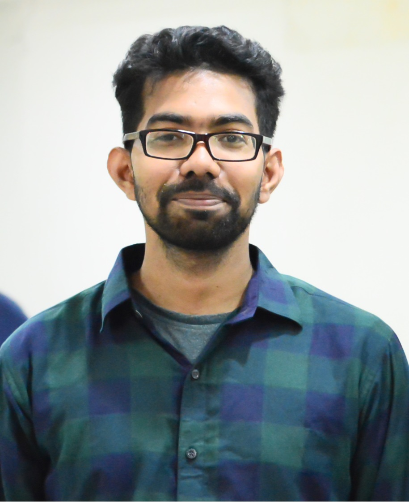

Hi, I'm Kazi 👋
I am a CPU Architect at Intel, where I work on the design and performance of next-generation processor microarchitectures. My work spans core and memory-subsystem architecture, performance modeling and analysis, exploring architectural trade-offs, and driving security and reliability features deep into the CPU pipeline. I enjoy turning research ideas into practical, silicon-ready architecture.
I earned my Ph.D. in Computer Engineering at North Carolina State University under Prof. Amro Awad, focusing on secure and reliable computer architecture — especially the security and reliability of emerging Non-Volatile Memory (NVM). I also led a major task in a DARPA project designing FPGA-based secure memory architectures. My research has been published in top-tier venues including ISCA, MICRO, and HPCA — see my publications and Google Scholar page.
Before my Ph.D., I earned a B.S. in Applied Physics, Electronics & Communication Engineering from the University of Chittagong, Bangladesh, and worked for several years as an Embedded Systems Engineer at StellarBD and IBSL. Connect with me on LinkedIn.
Recent News
- Intel Joined Intel as a CPU Architect.
- 10/08/2021: Our paper FsEncr accepted to HPCA-2022.
- 07/15/2021: Our paper Soteria accepted to MICRO-2021.